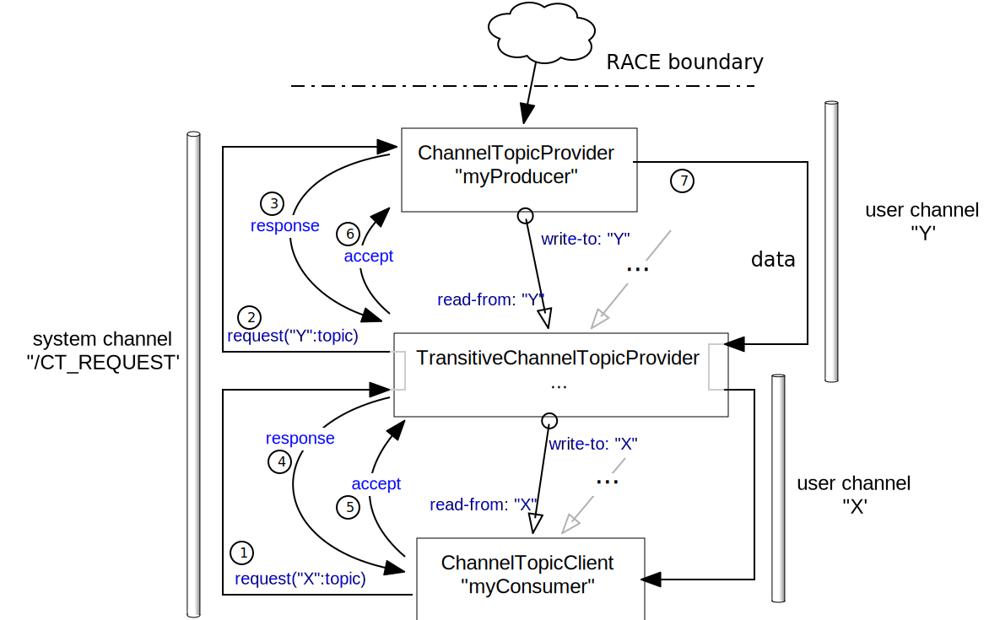

ChannelTopics
ChannelTopics are a mechanism to control data flow along bus channels. While the channels can be seen as the static pipes between actors, ChannelTopics can be thought of as the valves that turn on/off data flow along those pipes on demand. The rationale behind channel topic requests is that high volume messages/data should only proliferate through a RACE system if there are active clients for that data, which otherwise should be filtered at the system boundaries.
The two traits that implement the mechanism are ChannelTopicSubscriber (as the
requesting consumer) and ChannelTopicProvider (as the producer). Both define a protocol that
works fully transitive and asynchronous, i.e. providers can in turn request their own ChannelTopics
when they receive a request, and respond once they got their requests answered. A single ChannelTopic
request can therefore trigger a whole set of (different but related) requests upstream.
Request topics are generic Option[Any] objects, i.e. their values can be either
None- indicating requests that refer to whole channelsSome(object)- which allows the use of application specific objects to further elaborate requests
It is up to the ChannelTopicProvider to pattern match request topics it will serve.

At each level, requests are handled in four steps
- the request itself by the
ChannelTopicSubscriberactor - a response by one or more
ChannelTopicProvideractors - an accept by the subscriber to the selected provider
- data publishing of the accepted provider
Conversely, the subscriber announces to the selected provider once it does not need the data
anymore. ChannelTopicProviders keep track of their clients, and stop producing one the last
client for a topic has de-registered.
The ChannelTopicSubscriber API mainly consists of five methods:
- a system provided
request(channel,topic)to request a topic for a single channel - a system provided
requestTopic(topic)for requests that pertain to all subscribed channels
- an overridable isResponseAccepted(response) which returns true to select a responding provider
(he default isResponseAccepted() implementation just picks the first responding provider)
- a system provided releaseChannelTopic(channelTopic) to release a single channel/topic subscriptions
- a system provided releaseAll to release all open channel/topic subscriptions
The ChannelTopicProvider API has three methods:
- a isRequestAccepted(request) that has to be defined by the concrete ChannelTopicProvider
(there is no default), returning true for accepted responses
- a overridable gotAccept(accept) that is automatically called upon receiving an accept
- a overridable gotRelease(release), automatically called upon receiving a release
Providers that are also requesters by themselves have to mix in TransitiveChannelTopicProvider
instead of ChannelTopicProvider. Since this trait mainly keeps track of mapping incoming to
outgoing requests it does not have methods that need to be overridden or provided by concrete
actor classes. Note that incoming to outgoing request relations are 1:N.